긴장 · 땅에서 올라온 짐승 / 어린 양 같이, 용처럼 / 또 다른 짐승이 땅에서 올라옵니다. 그는 땅에 사는 자들을 처음 짐승에게 경배하게 합니다(13:12). / 어린 양 같이 두 뿔이 있고 용처럼 말을 하더라 계 13:11
 g32_06 흙길을 달리는 선수들의 다리
g32_06 흙길을 달리는 선수들의 다리불일치 의심 태그·장소·분위기
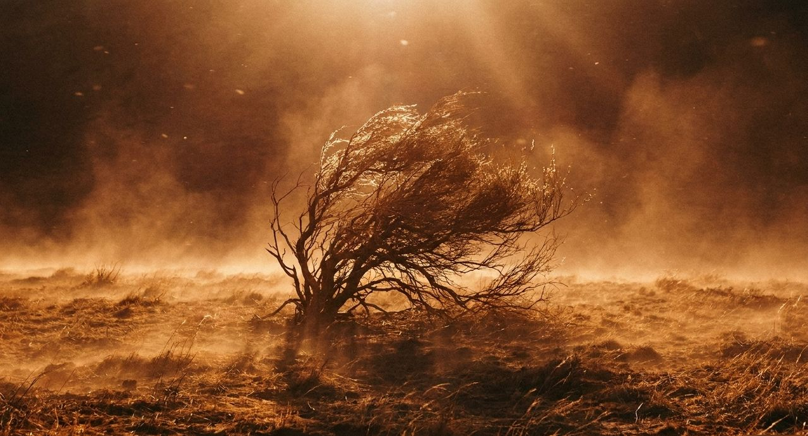
g40_07 뜨거운 바람에 휘어진 덤불중립 장식 중립 장식
권면 · 아직 끝나지 않은 달음질 / 푯대를 향해 / 바울은 이미 완성했다고 말하지 않고 앞을 향해 달려간다고 합니다(3:12–13). / 푯대를 향하여 그리스도 예수 안에서 하나님이 위에서 부르신 부름의 상을 위하여 달려가노라 빌 3:14 바울의 말
 g43_09 결승 기둥을 향해 달리는 사람(빌 3:14)
g43_09 결승 기둥을 향해 달리는 사람(빌 3:14)본문 설명 장면 낱말·장
g43_09 결승 기둥을 향해 달리는 사람(빌 3:14)본문 설명 본문 설명 · 낱말 푯대
배경 · 추천서 / 추천서가 필요한가 / 3–7장에서 바울은 자기가 맡은 직분을 설명합니다. 먼저 고린도 교회에 추천서가 필요하냐고 묻습니다(3:1). 바울의 대답은 이렇습니다. / 너희는 우리의 편지라 우리 마음에 썼고 뭇 사람이 알고 읽는 바라 고후 3:2
 g21_10 글을 쓰는 손(둘째 그림)
g21_10 글을 쓰는 손(둘째 그림)문맥 배경 태그·장소·분위기
g21_10 글을 쓰는 손(둘째 그림)문맥 배경 문맥 배경 · 낱말 편지 · 태그 scroll
근거 · 사람에게서 나는 향기 / 그리스도의 향기 / 바울은 자기 사역을 눈에 보이는 추천서가 아닌 향기에도 비유합니다. / 우리는 구원 받는 자들에게나 망하는 자들에게나 하나님 앞에서 그리스도의 향기니 고후 2:15 바울의 말
 g25_14 서리 앉은 돌담과 겨울 무화과나무
g25_14 서리 앉은 돌담과 겨울 무화과나무중립 장식 태그·장소·분위기
중립 장식 중립 장식
근거 · 추천서가 필요한가 / 너희가 우리의 편지라 / 3장에서 바울은 추천서가 필요한지 묻고, 교회 자체를 편지라고 합니다. / 너희는 우리의 편지라 우리 마음에 썼고 뭇 사람이 알고 읽는 바라 고후 3:2 바울의 말
 g19_10 메마른 고원의 길
g19_10 메마른 고원의 길중립 장식 태그·장소·분위기
중립 장식 중립 장식
로마서 1–3장 / 진노가 나타나고, 이제는 의가 / 온 세상의 입이 막힌 뒤, '이제는' 무엇이 나타났을까
 g25_02 아침 햇살이 들어오는 열린 성문
g25_02 아침 햇살이 들어오는 열린 성문불일치 의심 태그·장소·분위기
 g09_07 회당의 두루마리
g09_07 회당의 두루마리문맥 배경 문맥 배경 · 최근 반복
긴장 · 하늘로부터 / 또 하나 나타나는 것 / 그런데 바로 다음 절에도 '나타나나니'가 있습니다. / 하나님의 진노가 불의로 진리를 막는 사람들의 모든 경건하지 않음과 불의에 대하여 하늘로부터 나타나나니 롬 1:18
 g26_08 바위 사이 흙탕 급류
g26_08 바위 사이 흙탕 급류중립 장식 태그·장소·분위기
 g01_09 바다 파도
g01_09 바다 파도중립 장식 중립 장식 · 태그 storm_sky · 최근 반복
창세기 10–11장 / 하늘에 닿을 탑, 내려오신 하나님 / 흩어지지 않으려던 사람들이 왜 성읍 짓기를 멈추었을까
 g12_06 강가의 흙벽돌 성과 지구라트
g12_06 강가의 흙벽돌 성과 지구라트본문 설명 장면 낱말·장
g12_06 강가의 흙벽돌 성과 지구라트본문 설명 본문 설명
긴장 · 성읍과 탑 · 11:4 / 우리 이름을 내고 / 이제 그들은 성읍과 탑을 세우자고 합니다. 꼭대기는 하늘에 닿게, 이름은 널리 알리게, 사람들은 흩어지지 않게 하려는 계획입니다. / 우리 이름을 내고 온 지면에 흩어짐을 면하자 창 11:4 중 사람들의 말
 g27_14 무너진 돌 옆에 새로 쌓은 성벽
g27_14 무너진 돌 옆에 새로 쌓은 성벽불일치 의심 태그·장소·분위기
 g01_01 어두운 물 위의 빛
g01_01 어두운 물 위의 빛중립 장식 중립 장식 · 최근 반복
전환 · 내려오신 여호와 · 11:5 / 여호와께서 사람들이 건설하는 그 성읍과 탑을 보려고 내려오셨더라 / 하늘에 닿을 만큼 높이 쌓겠다는 탑. 그러나 그 성읍과 탑을 보려고 여호와께서 내려오십니다.
 g25_03 이슬 맺힌 아침 들풀
g25_03 이슬 맺힌 아침 들풀중립 장식 태그·장소·분위기
 g08_15 성벽 위의 파수꾼
g08_15 성벽 위의 파수꾼문맥 배경 문맥 배경 · 태그 city_wall · 최근 반복
의미 · 두 번의 제안 / 사람들의 “자”, 하나님의 “자” / 사람들이 “자”라고 말하며 탑을 세우려 합니다. 여호와께서도 “자”라고 말씀하십니다.
 g40_11 봄비 뒤 푸른 언덕의 양 떼
g40_11 봄비 뒤 푸른 언덕의 양 떼중립 장식 태그·장소·분위기
 g01_10 새벽 호수
g01_10 새벽 호수중립 장식 중립 장식
의미 · 불러 인도하여 내는 목자 / 쫓아낸 사람들, 불러 내는 목자 / 사람들은 그를 쫓아내어 보냈습니다(9:34). 이어지는 말씀에서 예수님은 자신을 "선한 목자"(10:11)라 하시고, 목자가 양을 어떻게 내보내는지 말씀하십니다. / 양은 그의 음성을 듣나니 그가 자기 양의 이름을 각각 불러 인도하여 내느니라 요 10:3
 g22_10 잃은 양을 어깨에 멘 목자
g22_10 잃은 양을 어깨에 멘 목자본문 설명 장면 낱말·장
g22_10 잃은 양을 어깨에 멘 목자본문 설명 본문 설명 · 낱말 선한 목자 · 태그 shepherd,sheep
긴장 · 바다 앞의 백성 / 눈을 들어 본즉 / 애굽 군대가 바닷가에 장막을 친 백성을 따라잡습니다(14:9). 이스라엘 자손은 몹시 두려워하며 여호와께 부르짖습니다(14:10). / 백성은 모세에게 애굽에 남아 있던 편이 나았겠다고 말합니다. / 애굽 사람을 섬기는 것이 광야에서 죽는 것보다 낫겠노라 출 14:12
 g46_03 먹구름 사이로 들판에 내리는 빛줄기
g46_03 먹구름 사이로 들판에 내리는 빛줄기중립 장식 태그·장소·분위기
 g03_01 애굽 신전 기둥
g03_01 애굽 신전 기둥문맥 배경 문맥 배경 · 최근 반복
전환 · 앞으로 나아가라 / 가만히, 그리고 앞으로 나아가라 / 이어서 여호와께서는 모세에게, 이스라엘 자손에게 명령하여 앞으로 나아가게 하라고 하십니다. 하나님이 싸우시겠다는 말씀을 들은 백성에게 걸어가야 할 길이 주어집니다. / 모세에게는 지팡이를 들고 손을 바다 위로 내밀라고 하십니다(14:16). / 이스라엘 자손에게 명령하여 앞으로 나아가게 하고 출 14:15
 g02_03 양 떼와 목자
g02_03 양 떼와 목자불일치 의심 태그·장소·분위기
 g01_15 구름 사이 빛
g01_15 구름 사이 빛중립 장식 중립 장식 · 최근 반복
긴장 · 두 번의 이른 아침 / 서로 다른 두 아침 / 하갈과 아이를 보내는 아침, 이삭과 떠나는 아침을 견주어 보세요.
 g12_09 덤불 아래 아이와 빈 가죽부대
g12_09 덤불 아래 아이와 빈 가죽부대본문 설명 장면 낱말·장
g12_09 덤불 아래 아이와 빈 가죽부대본문 설명 본문 설명 · 낱말 가죽부대
의미 · 미리 말씀하신 자리 / 만나 주겠다고 하신 곳 / 하나님은 성막을 지으라 하실 때 거기서 모세를 만나 말씀하겠다고 하셨습니다(출 25:22). 장막이 세워진 뒤, 같은 자리에서 그 목소리가 들립니다.
 g15_01 지성소의 언약궤
g15_01 지성소의 언약궤본문 설명 장면 낱말·장
g15_01 지성소의 언약궤본문 설명 본문 설명 · 낱말 속죄소
긴장 · 긍휼의 그릇 / 이방인 중에서도 / 그러므로 "오직 긍휼히 여기시는 하나님으로 말미암음이니라"(9:16). 토기장이의 비유 뒤에(9:21–23), 바울은 긍휼의 그릇이 누구인지 밝힙니다. / 이 그릇은 우리니 곧 유대인 중에서뿐 아니라 이방인 중에서도 부르신 자니라 롬 9:24
 g07_07 토기장이의 손
g07_07 토기장이의 손본문 설명 장면 낱말·장
 g31_04 물레 위에서 빚어지는 그릇(렘 18)
g31_04 물레 위에서 빚어지는 그릇(렘 18)본문 설명 본문 설명 · 낱말 토기장이
전환 · 나오는 생명들 · 8:2–19 / 들어가라 하신 하나님이 이제 나오라고 하십니다 / 비가 그치고 물이 점점 물러갑니다(8:2–5). 방주로 들어가라고 하셨던 하나님이(7:1) 이제 노아와 그의 가족에게 나오라고 말씀하십니다. / 너는 네 아내와 네 아들들과 네 며느리들과 함께 방주에서 나오고 창 8:16
 g40_02 비 갠 흙길의 물웅덩이와 감람나무
g40_02 비 갠 흙길의 물웅덩이와 감람나무중립 장식 태그·장소·분위기
g01_01 어두운 물 위의 빛중립 장식 중립 장식 · 최근 반복
전환 · 샘물 곁의 말씀 · 16:7–12 / 네 고통을 들으셨음이니라 / 여호와의 사자가 광야의 샘물 곁에서 하갈을 만납니다. 어디서 와서 어디로 가는지 물은 뒤(16:7–8), 사래에게 돌아가라고 명합니다. 이어 하갈의 후손이 많아질 것과 아들의 이름을 알려 줍니다(16:9–11). / 그 이름을 이스마엘이라 하라 이는 여호와께서 네 고통을 들으셨음이니라 창 16:11
 g47_04 위에서 빛이 드는 깊은 돌 구덩이
g47_04 위에서 빛이 드는 깊은 돌 구덩이불일치 의심 태그·장소·분위기
 g25_05 큰 바위 그늘 아래 작은 풀
g25_05 큰 바위 그늘 아래 작은 풀중립 장식 중립 장식 · 태그 desert
배경 · 거듭 나오는 좋다는 말씀 · 1장 / 보시기에 좋았더라 / 하나님이 지으신 것을 좋게 보셨다는 말은 1장에 일곱 번 나옵니다(1:4, 10, 12, 18, 21, 25, 31). “저녁이 되고 아침이 되니”는 여섯 날에 반복됩니다(1:5, 8, 13, 19, 23, 31). / 일곱째 날의 안식에는 이 마침말이 없습니다(2:2–3). / 빛이 하나님이 보시기에 좋았더라 창 1:4
 g46_02 첫 햇빛이 능선만 붉게 비춘 유대 광야
g46_02 첫 햇빛이 능선만 붉게 비춘 유대 광야중립 장식 태그·장소·분위기
g08_15 성벽 위의 파수꾼문맥 배경 문맥 배경
전환 · 좋지 않다고 하신 것 · 2:18 / 여호와 하나님이 이르시되 사람이 혼자 사는 것이 좋지 아니하니 내가 그를 위하여 돕는 배필을 지으리라 하시니라 / 그 동산의 사람을 두고, 하나님이 처음으로 좋지 않다고 말씀하십니다.
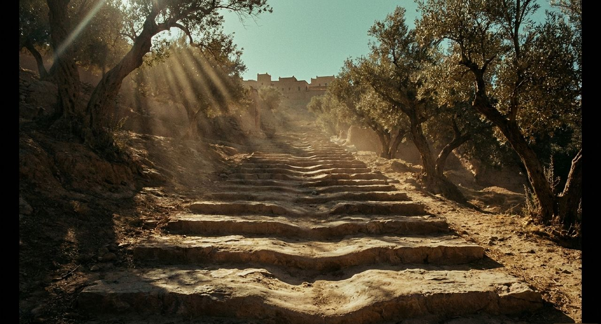
g26_02 감람나무 사이 오르막 돌계단불일치 의심 태그·장소·분위기
 g01_05 노을 언덕의 감람나무
g01_05 노을 언덕의 감람나무중립 장식 중립 장식 · 태그 olive_tree
근거 · 너희 몸 / 너희 자신의 것이 아니라 / 바울은 성도들의 몸에 대해 소유의 문제를 다시 묻습니다. / …너희는 너희 자신의 것이 아니라 고전 6:19 바울의 말
 g26_14 붉은 바위 사이 좁은 협곡 길
g26_14 붉은 바위 사이 좁은 협곡 길중립 장식 태그·장소·분위기
g01_01 어두운 물 위의 빛중립 장식 중립 장식 · 최근 반복
전환 · 이제는 / 이제는 율법 외에 하나님의 한 의가 나타났으니 율법과 선지자들에게 증거를 받은 것이라 / 입이 막힌 그 자리에서, 본문은 이렇게 이어집니다.
중립 장식 태그·장소·분위기
g01_01 어두운 물 위의 빛중립 장식 중립 장식 · 최근 반복
근거 · 이 마음의 주인 / 그리스도 예수의 마음 / 그는 겸손하라는 말에 그치지 않고 그 마음을 누구에게서 배워야 할지 가리킵니다. / 너희 안에 이 마음을 품으라 곧 그리스도 예수의 마음이니 빌 2:5 바울의 말
 g25_11 먹구름 아래 한 줄기 빛이 닿은 들
g25_11 먹구름 아래 한 줄기 빛이 닿은 들중립 장식 태그·장소·분위기
g01_15 구름 사이 빛중립 장식 중립 장식 · 최근 반복
의미 · 비교해 보기 · 두 번 보았다는 말씀 / 보았느니라, 보았으니 / 하나님은 다시 백성이 '보았다'고 말씀하십니다(20:22). 두 말씀에서 각각 무엇을 보았다고 하시는지 비교해 보세요.
g01_15 구름 사이 빛중립 장식 태그·장소·분위기
g46_02 첫 햇빛이 능선만 붉게 비춘 유대 광야중립 장식 중립 장식
긴장 · 맏이를 대신하게 / 레위인을 택하여 / 하나님은 레위인을 택하신 일을 이스라엘의 맏이와 함께 말씀하십니다. / 레위인을 택하여 이스라엘 자손 중에 태를 열어 태어난 모든 맏이를 대신하게 하였은즉 레위인은 내 것이라 민 3:12
g46_03 먹구름 사이로 들판에 내리는 빛줄기중립 장식 태그·장소·분위기
g01_09 바다 파도중립 장식 중립 장식
의미 · 구경하는 자들 / 영광을 하늘의 하나님께 / 한때 죽음을 기뻐하던 땅의 사람들. 이제 남은 자들은 두려워하며 하나님께 영광을 돌립니다. / …그 남은 자들이 두려워하여 영광을 하늘의 하나님께 돌리더라 계 11:13 요한이 본 것
 g40_13 절벽 둥지 위에서 날개를 편 독수리
g40_13 절벽 둥지 위에서 날개를 편 독수리중립 장식 태그·장소·분위기
중립 장식 중립 장식
의미 · 입에 남을 말씀 / 네 입에 있게 하라 / 무교절은 손의 기호와 미간의 표처럼 여호와의 율법을 기억하게 합니다(13:9). 처음 난 것에 관한 규정도 손의 기호와 미간의 표라는 말로 마무리됩니다(13:16). / 여호와의 율법이 네 입에 있게 하라 이는 여호와께서 강하신 손으로 너를 애굽에서 인도하여 내셨음이니 출 13:9
 g27_01 등잔 곁에서 두루마리를 펼친 두 손
g27_01 등잔 곁에서 두루마리를 펼친 두 손불일치 의심 태그·장소·분위기
g19_10 메마른 고원의 길중립 장식 중립 장식
전환 · 차별이 없느니라 / 값 없이 / 그 의는 "예수 그리스도를 믿음으로 말미암아 모든 믿는 자에게 미치는 하나님의 의"(3:22)입니다. 모든 사람이 죄를 범하였으니, 여기에도 차별이 없습니다(3:22–23). / 그리스도 예수 안에 있는 속량으로 말미암아 하나님의 은혜로 값 없이 의롭다 하심을 얻은 자 되었느니라 롬 3:24
불일치 의심 태그·장소·분위기
 g01_02 은하수 아래 바위
g01_02 은하수 아래 바위중립 장식 중립 장식 · 최근 반복
전환 · 그리스도의 고난에 참여 / 오히려 너희가 그리스도의 고난에 참여하는 것으로 즐거워하라 이는 그의 영광을 나타내실 때에 너희로 즐거워하고 기뻐하게 하려 함이라 / 바로 다음 절에서 베드로는 성도들에게 이렇게 권합니다.
g25_02 아침 햇살이 들어오는 열린 성문불일치 의심 태그·장소·분위기
g01_15 구름 사이 빛중립 장식 중립 장식 · 최근 반복
긴장 · 함께 살 수 없었던 형제 / 가나안을 떠난 에서 / 에서는 가나안에서 모은 모든 재산을 가지고 동생 야곱을 떠납니다(36:6). 성경은 그 까닭을 이렇게 설명합니다. / 두 사람의 소유가 풍부하여 함께 거주할 수 없음이러라 창 36:7
불일치 의심 태그·장소·분위기
 g26_01 돌무더기가 선 갈림길
g26_01 돌무더기가 선 갈림길중립 장식 중립 장식
의미 · 장막을 치시리니 / 그들 위에 장막을 치시리니 / 숨었던 사람들의 물음 뒤로, 이제 하나님이 돌보시는 무리가 보입니다. / …보좌에 앉으신 이가 그들 위에 장막을 치시리니 계 7:15 장로의 말
 g47_02 막사 안의 로마식 방패와 투구
g47_02 막사 안의 로마식 방패와 투구불일치 의심 태그·장소·분위기
g01_15 구름 사이 빛중립 장식 중립 장식 · 최근 반복
전환 · 주 안에서 항상 / 주 안에서 항상 기뻐하라 내가 다시 말하노니 기뻐하라 / 3:1에서 바울은 "너희에게 같은 말을 쓰는 것이"(3:1) 수고롭지 않다고 했습니다. 4장에서 그 말을 다시 씁니다.
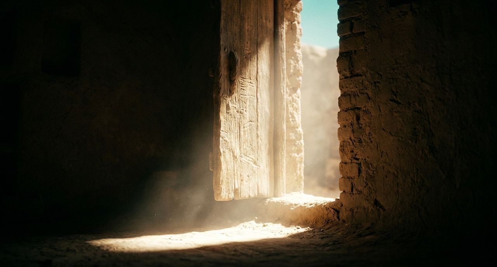
g27_02 흙벽돌 집의 열린 문과 아침 햇살불일치 의심 태그·장소·분위기
g01_15 구름 사이 빛중립 장식 중립 장식 · 최근 반복
의미 · 하나님의 대답 / 담당하게 하신 하나님 / 가까이 나아가는 자마다 죽느냐는 물음에, 하나님은 제사장과 레위인에게 죄를 담당하게 하심으로 대답하십니다(18:1, 23). / 이어지는 19장은 시체로 부정하게 된 사람이 다시 정결하게 되는 물의 규례입니다(19:1–22). 부정한 채로 두면 여호와의 성막을 더럽힌다고 하십니다(19:13).
 g08_07 물가의 양 떼
g08_07 물가의 양 떼중립 장식 태그·장소·분위기
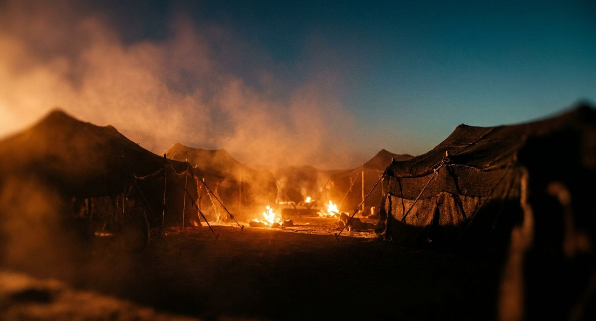
g02_01 장막 진영의 모닥불문맥 배경 문맥 배경 · 태그 tent · 최근 반복
전환 · 이삭에게 이르다 · 24:62–67 / 어머니의 장막으로 / 돌아온 종은 이삭에게 자신이 한 일을 모두 전합니다(24:66). 이삭은 리브가를 어머니 사라의 장막으로 데려와 아내로 맞이하고 사랑합니다. / 이삭이 그의 어머니를 장례한 후에 위로를 얻었더라 창 24:67
 g40_12 저녁 하늘을 지나는 황새 떼
g40_12 저녁 하늘을 지나는 황새 떼중립 장식 태그·장소·분위기
문맥 배경 문맥 배경 · 태그 tent · 최근 반복
배경 · 브엘세바에 멈춘 길 / 브엘세바의 밤 / 이스라엘은 모든 소유를 가지고 길을 떠나 브엘세바에 이릅니다(46:1). 그곳에서 아버지 이삭의 하나님께 제사를 드립니다. 그날 밤, 하나님이 야곱을 부르십니다. / 야곱아 야곱아 하시는지라 야곱이 이르되 내가 여기 있나이다 창 46:2
 g25_09 달빛 아래 은빛 모래 언덕
g25_09 달빛 아래 은빛 모래 언덕중립 장식 태그·장소·분위기
문맥 배경 문맥 배경 · 최근 반복
의미 · 살아 있는 자로 / 넘친 은혜 아래 / 죄가 더한 곳에 넘친 것은 은혜였습니다(5:20). 7–8장은 율법과 죄의 싸움, 성령 안의 삶으로 이어집니다. 6장에서 바울은 은혜 아래 있는 사람에게 먼저 이렇게 말합니다. / 이와 같이 너희도 너희 자신을 죄에 대하여는 죽은 자요 그리스도 예수 안에서 하나님께 대하여는 살아 있는 자로 여길지어다 롬 6:11
 g19_15 바다로 뻗은 산줄기
g19_15 바다로 뻗은 산줄기중립 장식 태그·장소·분위기
g09_07 회당의 두루마리문맥 배경 문맥 배경 · 최근 반복
전환 · 두려워하지 말라 / 바울아 두려워하지 말라 네가 가이사 앞에 서야 하겠고 또 하나님께서 너와 함께 항해하는 자를 다 네게 주셨다 / 여러 사람이 오래 먹지 못할 때, 바울이 가운데 서서 지난밤 곁에 선 하나님의 사자의 말을 전합니다(27:21–23).
g01_01 어두운 물 위의 빛중립 장식 태그·장소·분위기
 g40_15 덤불 사이에서 나오는 사자
g40_15 덤불 사이에서 나오는 사자문맥 배경 문맥 배경 · 낱말 사자 · 태그 lion
의미 · 땅과 거처에 남은 이름들 / 구역과 거처를 따른 이름들 / 야곱과 함께 살던 땅을 떠난 에서는 세일 산에 정착합니다. 족보는 족장들의 종족과 거처를 소개한 뒤(36:40–43), "에돔 족속의 조상은 에서더라"(36:43)라는 말로 끝납니다. 내일은 가나안에 사는 야곱의 이야기를 읽습니다(37:1).
g19_15 바다로 뻗은 산줄기중립 장식 태그·장소·분위기
 g02_02 지팡이 쥔 노인의 손
g02_02 지팡이 쥔 노인의 손문맥 배경 문맥 배경 · 태그 tent · 최근 반복
의미 · 하라, 그리고 듣더니 / 나란히 놓인 두 장면 / 같은 장 안에서, 길 위에서 들린 '하라' 곁에 앉아서 듣는 마리아가 놓입니다. 예수님은 마리아가 '좋은 편'을 택하였다고 하십니다(10:42).
 g27_07 흙 묻은 손바닥 위 밀알
g27_07 흙 묻은 손바닥 위 밀알불일치 의심 태그·장소·분위기
g02_02 지팡이 쥔 노인의 손문맥 배경 문맥 배경 · 최근 반복
전환 · 함께 세운 사람들 / 오홀리압과 지혜로운 모든 자 / 하나님은 단 지파의 오홀리압도 세워 브살렐과 함께 일하게 하십니다(31:6). / 두 사람뿐 아니라 함께 만드는 모든 지혜로운 사람에게도 지혜를 주겠다고 하십니다. / 지혜로운 마음이 있는 모든 자에게 내가 지혜를 주어 그들이 내가 네게 명령한 것을 다 만들게 할지니 출 31:6
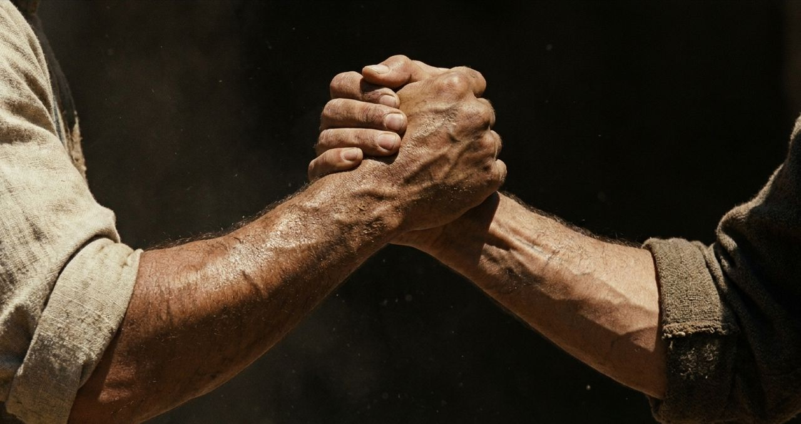
g27_10 굳게 맞잡은 두 손불일치 의심 태그·장소·분위기
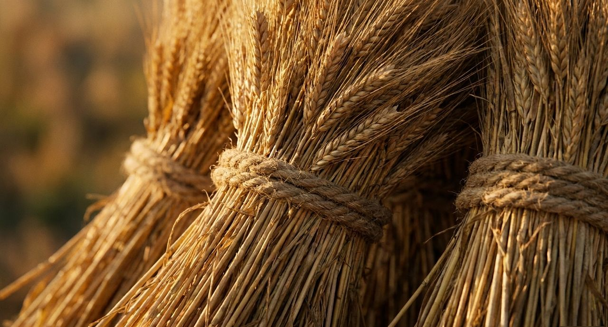
g05_12 묶은 곡식 단문맥 배경 문맥 배경 · 태그 sheaves
긴장 · 메워진 우물 / 복 뒤에 온 시기 / 이삭은 그 땅에서 농사를 지어 백 배의 수확을 거둡니다. 본문은 그 까닭을 "여호와께서 복을 주시므로"(26:12)라고 설명합니다. / 블레셋 사람들은 부유해진 이삭을 시기하고, 아브라함의 종들이 팠던 우물들을 메웁니다. / 그 아버지 아브라함 때에 그 아버지의 종들이 판 모든 우물을 막고 흙으로 메웠더라 창 26:15
g47_04 위에서 빛이 드는 깊은 돌 구덩이불일치 의심 태그·장소·분위기
 g46_14 돌 우물에서 물을 긷는 어머니와 아이
g46_14 돌 우물에서 물을 긷는 어머니와 아이문맥 배경 문맥 배경 · 낱말 우물 · 태그 well
배경 · 복음은 어디서 / 사람에게서 받은 것도 아니요 / 그래서 바울은 자기가 전한 복음이 어디서 왔는지 밝힙니다. 그 근거로 자기 이야기를 꺼냅니다. / 이는 내가 사람에게서 받은 것도 아니요 배운 것도 아니요 오직 예수 그리스도의 계시로 말미암은 것이라 갈 1:12
g27_01 등잔 곁에서 두루마리를 펼친 두 손불일치 의심 태그·장소·분위기
g09_07 회당의 두루마리문맥 배경 문맥 배경 · 태그 scroll · 최근 반복
배경 · 복을 주셨던 하나님 / 아들에게 들려주는 하나님의 약속 / 병든 이스라엘은 요셉이 왔다는 말을 듣고 힘을 내어 침상에 앉습니다(48:2). 그리고 루스에서 전능하신 하나님께 받은 복을 이야기합니다. / 내가 너로 생육하고 번성하게 하여 … 내가 이 땅을 네 후손에게 주어 영원한 소유가 되게 하리라 창 48:4
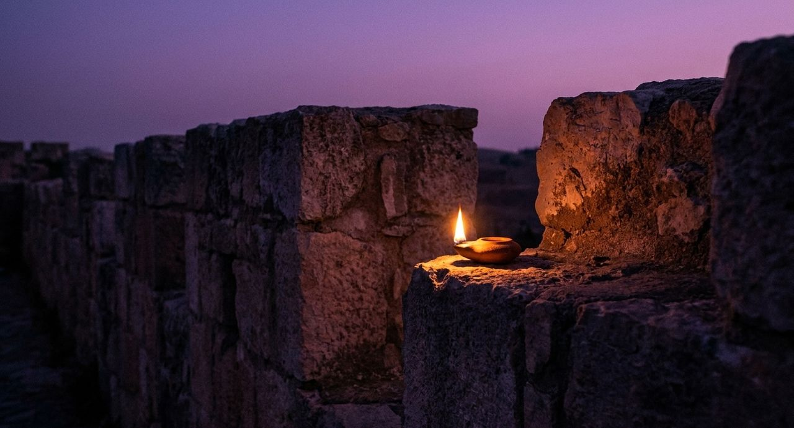
g25_07 해 질 녘 성벽 위 등불불일치 의심 태그·장소·분위기
 g04_05 토기 등잔
g04_05 토기 등잔문맥 배경 문맥 배경 · 태그 oil_lamp · 최근 반복
전환 · 열흘 뒤 / 다른 날이 오다 / 그 아침이 밝기 전에 아비가일이 내려와 다윗을 막습니다(25:20, 34). 다윗이 아침까지 하려던 일은 일어나지 않고, 나발에게는 다른 날이 옵니다. / 한 열흘 후에 여호와께서 나발을 치시매 그가 죽으니라 삼상 25:38
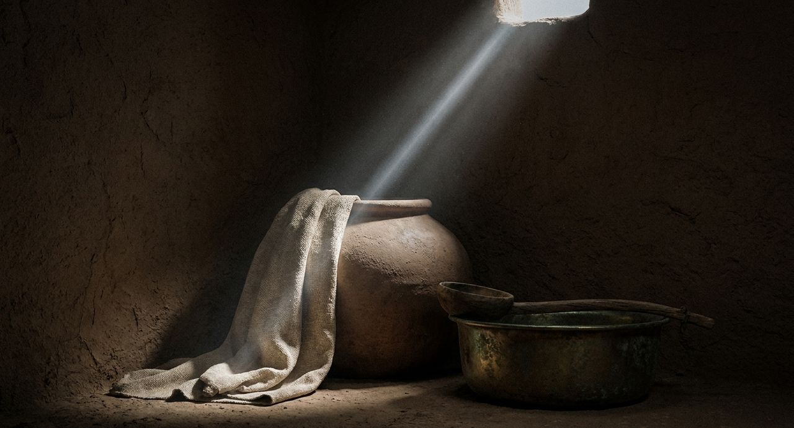
g27_05 물 항아리와 대야와 수건불일치 의심 태그·장소·분위기
 g05_04 흙벽돌 집 안뜰
g05_04 흙벽돌 집 안뜰문맥 배경 문맥 배경 · 태그 clay_jar
전환 · 기억난 사람 / 오늘 내 죄를 기억하나이다 / 그제야 술 맡은 관원장이 감옥에서 있었던 일을 바로에게 말합니다(41:9–13). 바로는 사람을 보내 요셉을 부르고, 요셉은 급히 감옥에서 나옵니다(41:14). 관원장의 이야기는 이 말로 시작되었습니다. / 내가 오늘 내 죄를 기억하나이다 창 41:9
g08_15 성벽 위의 파수꾼근거 약함 태그·장소·분위기
 g42_10 돌벽 감옥 바닥의 쇠사슬과 한 줄기 빛
g42_10 돌벽 감옥 바닥의 쇠사슬과 한 줄기 빛문맥 배경 문맥 배경 · 낱말 감옥 · 태그 prison
긴장 · 모든 역사를 마치되 / 일곱 번, 그리고 한 번 더 / '여호와께서 모세에게 명령하신 대로'라는 말은 39:1에서 39:31까지 일곱 번 나옵니다. 모든 일을 마친 대목에서도 이 말이 이어집니다. / 이스라엘 자손이 이와 같이 성막 곧 회막의 모든 역사를 마치되 여호와께서 모세에게 명령하신 대로 다 행하고 출 39:32
근거 약함 태그·장소·분위기
g02_02 지팡이 쥔 노인의 손문맥 배경 문맥 배경 · 태그 tent · 최근 반복
의미 · 나를 따르라 / 부인했던 자에게 맡기신 길 / 세 번 물으신 주님은 세 번 양을 맡기십니다(21:15–17). 이어 베드로가 "어떠한 죽음으로 하나님께 영광을 돌릴 것"(21:19)을 말씀하시고 부르십니다. / 이 말씀을 하시고 베드로에게 이르시되 나를 따르라 하시니 요 21:19
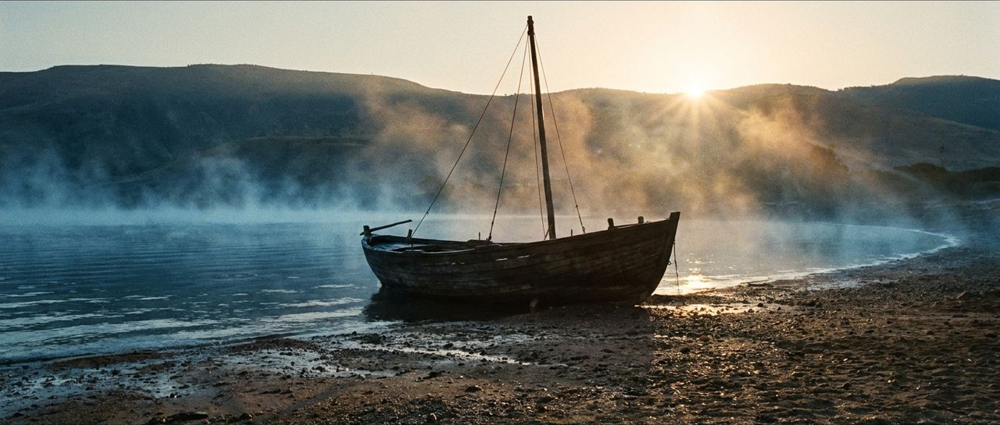
g09_01 물가의 고기잡이 배근거 약함 태그·장소·분위기
 g09_02 배 위의 그물
g09_02 배 위의 그물문맥 배경 문맥 배경 · 태그 sea
전환 · 두루 다니며 / 그 흩어진 사람들이 두루 다니며 복음의 말씀을 전할새 / 사울은 집집마다 들어가 남녀를 끌어다가 옥에 넘깁니다(8:3). 바로 다음 절은 이렇습니다.
 g19_09 두 산 사이 골짜기 길
g19_09 두 산 사이 골짜기 길근거 약함 태그·장소·분위기
 g10_07 돌길을 가는 두 사람
g10_07 돌길을 가는 두 사람문맥 배경 문맥 배경
배경 · 베데스다 / 서른여덟 해 된 병자 / 명절에 예루살렘 양문 곁 베데스다 못에 많은 병자가 누워 있습니다(5:2–3). 거기 서른여덟 해 된 병자가 있습니다(5:5). / 예수께서 그 누운 것을 보시고 병이 벌써 오래된 줄 아시고 이르시되 네가 낫고자 하느냐 요 5:6
 g08_09 성전 계단
g08_09 성전 계단근거 약함 태그·장소·분위기
 g19_01 언덕에서 바라본 예루살렘
g19_01 언덕에서 바라본 예루살렘문맥 배경 문맥 배경 · 최근 반복
긴장 · 뻗은 손 · 22:9–10 / 칼을 잡은 손 / 아브라함은 하나님이 일러 주신 곳에 도착해 제단을 쌓습니다. 이삭을 묶어 제단 위 나무에 올려놓고(22:9), 칼을 잡습니다. / 손을 내밀어 칼을 잡고 그 아들을 잡으려 하니 창 22:10
 g02_04 돌 제단
g02_04 돌 제단근거 약함 태그·장소·분위기
 g41_11 나무를 깎는 손과 대패
g41_11 나무를 깎는 손과 대패문맥 배경 문맥 배경 · 낱말 나무
전환 · 모든 사람에게 / 하나님이 모든 사람을 순종하지 아니하는 가운데 가두어 두심은 모든 사람에게 긍휼을 베풀려 하심이로다 / 본문은 이 말을 이렇게 모읍니다.
g09_07 회당의 두루마리근거 약함 태그·장소·분위기
g01_15 구름 사이 빛중립 장식 중립 장식 · 최근 반복
긴장 · 큰 성 길에 / 그들의 시체가 큰 성 길에 / 그들의 시체는 큰 성의 거리에 놓입니다. / 그들의 시체가 큰 성 길에 있으리니… 계 11:8 요한이 들은 말씀
g10_07 돌길을 가는 두 사람근거 약함 태그·장소·분위기
g01_01 어두운 물 위의 빛중립 장식 중립 장식 · 최근 반복
전환 · 보는 자들은 / 내가 심판하러 이 세상에 왔으니 보지 못하는 자들은 보게 하고 보는 자들은 맹인이 되게 하려 함이라 / 그가 "주여 내가 믿나이다"(9:38) 하고 절하자, 예수님이 말씀하십니다.
g08_15 성벽 위의 파수꾼근거 약함 태그·장소·분위기
 g01_08 강가 갈대
g01_08 강가 갈대중립 장식 중립 장식
긴장 · 궁으로 간 사래 · 12:14–16 / 바로의 궁으로 / 바로의 고관들은 사래를 보고 그를 칭찬합니다. 사래는 바로의 궁으로 들어가게 되고(12:15), 아브람은 사래 덕분에 바로에게 후한 대접을 받습니다. / 아브람이 양과 소와 노비와 암수 나귀와 낙타를 얻었더라 창 12:16
g19_09 두 산 사이 골짜기 길근거 약함 태그·장소·분위기
g08_07 물가의 양 떼중립 장식 중립 장식 · 태그 sheep · 최근 반복
긴장 · 다른 예식, 이어지는 물음 / 이것이 어찌 됨이냐 / 태에서 처음 난 것은 구별하여 여호와께 드리고, 맏아들은 대속하라는 규정이 이어집니다(13:12–13). 이번에도 모세는 훗날 아들이 물을 때를 미리 일러 줍니다. / 후일에 네 아들이 네게 묻기를 이것이 어찌 됨이냐 하거든 출 13:14
g19_09 두 산 사이 골짜기 길근거 약함 태그·장소·분위기
g08_07 물가의 양 떼중립 장식 중립 장식 · 태그 sheep · 최근 반복
긴장 · 내려가지 말라 / 애굽으로 내려가지 말라 / 그랄에 온 이삭에게 여호와께서 나타나십니다. 하나님은 애굽으로 내려가지 말고 지시하시는 땅에 머물라고 말씀하십니다(26:1–2). 아버지와는 다른 길입니다. / 애굽으로 내려가지 말고 내가 네게 지시하는 땅에 거주하라 창 26:2
 g02_14 멀리 가는 낙타 대상
g02_14 멀리 가는 낙타 대상근거 약함 태그·장소·분위기
g01_09 바다 파도중립 장식 중립 장식
전환 · 층대 위의 이야기 / 내가 결박하여 / 층대 위에 선 바울은 히브리 말로 백성에게 자기 이야기를 합니다(21:40; 22:2). 쇠사슬에 묶인 그가 말하는 옛 이야기 속에서, 그는 남을 결박하던 사람입니다. / 내가 이 도를 박해하여 사람을 죽이기까지 하고 남녀를 결박하여 옥에 넘겼노니 행 22:4 바울의 말
 g47_05 감옥 바닥의 나무 차꼬와 쇠고랑
g47_05 감옥 바닥의 나무 차꼬와 쇠고랑문맥 배경 태그·장소·분위기
g42_10 돌벽 감옥 바닥의 쇠사슬과 한 줄기 빛문맥 배경 문맥 배경 · 태그 prison,chains · 최근 반복
배경 · 진영을 정결하게 / 진영의 규례, 그리고 서원 / 5장에는 진영을 정결하게 지키는 규례가 이어집니다. 부정한 자를 내보내고, 죄 값을 갚고, 의심의 법을 행하는 규례입니다(5:1–31). / 6장에서는 남자나 여자가 스스로 하는 서원을 다룹니다. / 남자나 여자가 특별한 서원 곧 나실인의 서원을 하고 자기 몸을 구별하여 여호와께 드리려고 하면 민 6:2
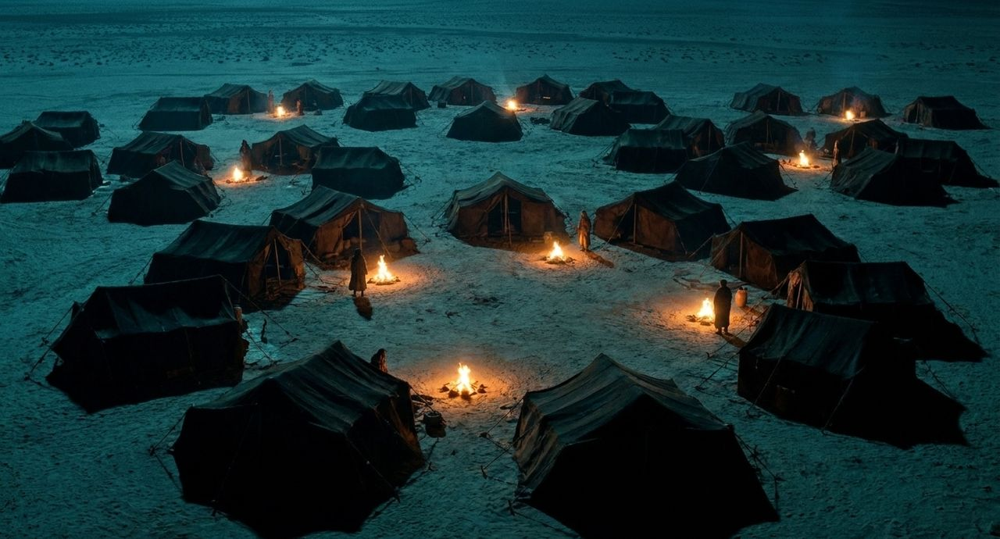
g47_12 달빛 아래 장막 진영과 모닥불들문맥 배경 태그·장소·분위기
 g42_06 광야에 펼쳐진 검은 장막들과 화덕 연기
g42_06 광야에 펼쳐진 검은 장막들과 화덕 연기문맥 배경 문맥 배경 · 낱말 진영 · 태그 camp
긴장 · 성전의 두 기도 / 다시, 멀리 서서 / 다시 '멀리 서서' 기도하는 사람이 나옵니다. 이번에는 비유 속 성전의 세리입니다(18:10, 13). / 바리새인은 서서 따로 기도합니다(18:11). 세리는 눈을 들지도 못하고 가슴을 칩니다. / 하나님이여 불쌍히 여기소서 나는 죄인이로소이다 눅 18:13
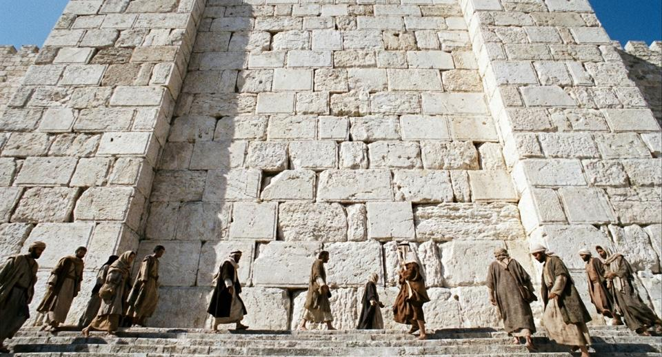
g42_03 크게 다듬은 흰 돌벽과 계단을 오르는 사람들문맥 배경 태그·장소·분위기
g08_09 성전 계단문맥 배경 문맥 배경 · 태그 temple_stones
긴장 · 배불리 먹게 하실 때에 / 짓지 않은 성읍, 파지 않은 우물 / 하나님은 백성이 건축하지 않은 성읍과 채우지 않은 집, 파지 않은 우물을 얻게 하실 것입니다(6:10–11). / 모세는 그 풍성한 때를 두고 이렇게 말합니다. / 너는 조심하여 너를 애굽 땅 종 되었던 집에서 인도하여 내신 여호와를 잊지 말고 신 6:12
 g34_05 물동이를 이고 돌아가는 저녁 길
g34_05 물동이를 이고 돌아가는 저녁 길문맥 배경 태그·장소·분위기
g46_14 돌 우물에서 물을 긷는 어머니와 아이문맥 배경 문맥 배경 · 낱말 우물 · 태그 well · 최근 반복
전환 · 먹여서 알게 하심 / 먹이시며 알려 주시는 하나님 / 모세와 아론은 여호와께서 백성의 원망을 들으셨다고 전합니다(16:6–8). / 저녁에는 메추라기가 오고, 아침에는 만나가 내립니다(16:13–15). 하나님은 이를 통해 백성이 무엇을 알게 될지 말씀하십니다. / 너희가 해 질 때에는 고기를 먹고 아침에는 떡으로 배부르리니 내가 여호와 너희의 하나님인 줄 알리라 출 16:12
 g46_13 추수꾼들이 떡과 볶은 곡식을 나누는 손
g46_13 추수꾼들이 떡과 볶은 곡식을 나누는 손문맥 배경 태그·장소·분위기
문맥 배경 문맥 배경 · 최근 반복
배경 · 생각나게 하려 / 이미 아는 것을 다시 / 베드로는 편지를 받는 이들이 이미 진리에 서 있다고 말합니다. 그래도 같은 것을 거듭 일깨우려 합니다. 그 사이 2장은 거짓 선생들을 경고합니다(2:1). / 그러므로 너희가 이것을 알고 이미 있는 진리에 서 있으나 내가 항상 너희에게 생각나게 하려 하노라 벧후 1:12
 g11_10 편지를 쓰는 손
g11_10 편지를 쓰는 손문맥 배경 태그·장소·분위기
g21_10 글을 쓰는 손(둘째 그림)문맥 배경 문맥 배경 · 낱말 편지 · 태그 oil_lamp
창세기 40–41장 / 사람에게 잊힌 요셉, 해석하시는 하나님 / 잊혔다가 불려 나온 요셉은 앞일을 정하시는 분을 누구라고 밝힐까
근거 약함 태그·장소·분위기
 g13_03 빛이 드는 감옥
g13_03 빛이 드는 감옥본문 설명 본문 설명
디모데전서 1–6장 / 미쁘다 이 말이여 / 세 번 돌아오는 한 마디, 그 첫 번째는 죄인의 고백과 함께 옵니다
g04_05 토기 등잔근거 약함 태그·장소·분위기
 g45_08 손을 들고 기도하는 사람들의 뒷모습(딤전 2:8)
g45_08 손을 들고 기도하는 사람들의 뒷모습(딤전 2:8)본문 설명 본문 설명
고린도전서 11–14장 / 은사 사이에 놓인 가장 좋은 길 / 은사를 다루는 12장과 14장 사이, 13장이 모임의 질서를 바꿉니다
g04_05 토기 등잔근거 약함 태그·장소·분위기
 g43_06 한 상 위에서 맞닿은 여러 손(롬 12; 고전 12)
g43_06 한 상 위에서 맞닿은 여러 손(롬 12; 고전 12)본문 설명 본문 설명
고린도후서 1–2장 / 예 예 하면서 아니라 아니라? / 바뀐 방문 계획 앞에서 바울은 말의 근거를 어디에 두는가
g10_07 돌길을 가는 두 사람근거 약함 태그·장소·분위기
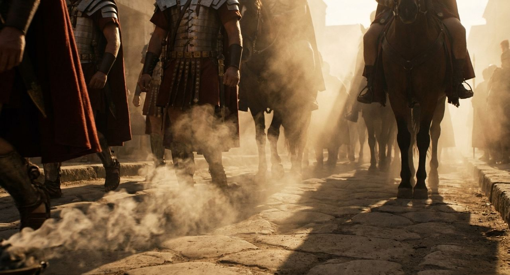
g43_05 돌길을 지나는 로마 개선 행렬(고후 2:14)본문 설명 본문 설명
히브리서 7–9장 / 누가 하나님께 나아가는 길을 열었을까요? / 땅의 성소에는 들어가는 때와 사람이 정해져 있었습니다.
g10_07 돌길을 가는 두 사람근거 약함 태그·장소·분위기
 g35_10 언약궤 앞의 싹 난 지팡이와 만나 항아리(히 9:4)
g35_10 언약궤 앞의 싹 난 지팡이와 만나 항아리(히 9:4)본문 설명 본문 설명
창세기 46–47장 / 함께 내려가시는 하나님, 돌아갈 땅 / 다시 올라오게 하시겠다는 약속, 야곱은 어디에 묻어 달라고 할까
g02_14 멀리 가는 낙타 대상근거 약함 태그·장소·분위기
 g13_06 곡식 창고와 일꾼들
g13_06 곡식 창고와 일꾼들본문 설명 본문 설명
고린도전서 5–7장 / 모든 것이 가하나, 몸은 주를 위하여 / '모든 것이 내게 가하나'에 바울이 붙인 제한과 근거
 g27_04 식탁 위 떡과 토기 잔, 손들
g27_04 식탁 위 떡과 토기 잔, 손들불일치 의심 태그·장소·분위기
 g43_03 등잔을 들고 집 바닥을 살피는 사람(고전 5:7)
g43_03 등잔을 들고 집 바닥을 살피는 사람(고전 5:7)본문 설명 본문 설명
디모데후서 1–4장 / 이어지는 믿음, 맡겨지는 말씀 / 외조모에게서 디모데로, 디모데에게서 다른 사람들로 떠날 시각이 가까운 바울의 부탁
g21_10 글을 쓰는 손(둘째 그림)불일치 의심 태그·장소·분위기
 g43_10 보초 서는 군사와 밭 가는 농부(딤후 2:3–6)
g43_10 보초 서는 군사와 밭 가는 농부(딤후 2:3–6)본문 설명 본문 설명
욥기 1–3장 / 온전하다 불린 사람, 그 입술의 말 / 본문과 하나님이 같은 말로 부른 욥, 무너진 자리에서 그의 입술은 무엇을 말했을까
g27_14 무너진 돌 옆에 새로 쌓은 성벽불일치 의심 태그·장소·분위기
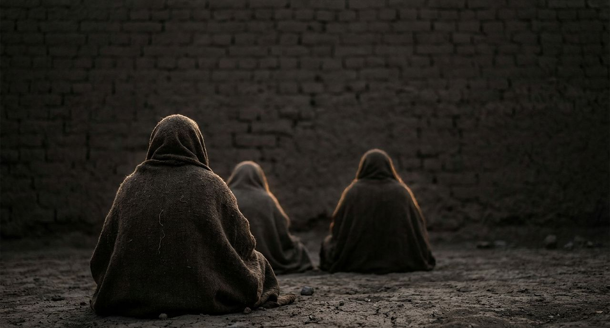
g38_02 말없이 땅에 앉은 세 사람의 뒷모습(욥 2:13)본문 설명 본문 설명
로마서 9–11장 / 큰 근심에서 깊도다까지 / 그 사이에서 '긍휼'은 누구에게서 누구에게로 옮겨 갈까
 g34_04 밤 양 우리를 지키는 목자
g34_04 밤 양 우리를 지키는 목자불일치 의심 태그·장소·분위기
g07_07 토기장이의 손본문 설명 본문 설명
민수기 15–17장 / 다 거룩하다는 말, 누가 거룩한지 보이시는 분 / 고라 무리의 말 앞에서 하나님은 무엇으로 대답하셨을까
 g42_02 뿔 달린 놋 제단 위의 불
g42_02 뿔 달린 놋 제단 위의 불불일치 의심 태그·장소·분위기
 g36_09 싹 나고 살구 열린 지팡이와 마른 지팡이들(민 17)
g36_09 싹 나고 살구 열린 지팡이와 마른 지팡이들(민 17)본문 설명 본문 설명
요한복음 13–14장 / 주여, 어디로 가시나이까 / 떠나실 때가 이른 밤, '어디로'에 예수님은 무엇으로 대답하실까
 g25_10 깊은 밤 등불 하나 켜진 마을
g25_10 깊은 밤 등불 하나 켜진 마을불일치 의심 태그·장소·분위기
 g23_02 제자의 발을 씻기심
g23_02 제자의 발을 씻기심본문 설명 본문 설명
긴장 · 바울의 목록 / 옥과 매와 파선 / 그런데 이어지는 목록은 이룬 일이 아닙니다. 옥에 갇히고 매를 맞고 "세 번 파선하고"(11:25) 위험을 당한 일입니다. / 또 수고하며 애쓰고 여러 번 자지 못하고 주리며 목마르고 여러 번 굶고 춥고 헐벗었노라 고후 11:27
g42_10 돌벽 감옥 바닥의 쇠사슬과 한 줄기 빛문맥 배경 태그·장소·분위기
g01_09 바다 파도중립 장식 중립 장식 · 최근 반복
전환 · 전과 같이 엎드려 / 다시 사십 주 사십 야 / 모세는 다시 여호와 앞에 엎드립니다. 이번에도 사십 주 사십 야 동안 떡도 먹지 않고 물도 마시지 않습니다(9:18). / 여호와께서 그때에도 모세의 말을 들으셨고, 모세는 아론을 위해서도 기도합니다(9:19–20).
g46_13 추수꾼들이 떡과 볶은 곡식을 나누는 손문맥 배경 태그·장소·분위기
g01_08 강가 갈대중립 장식 중립 장식 · 최근 반복
긴장 · 어디서 / 그릇도 없고, 우물은 깊은데 / 예수님은 "네게 물 좀 달라 하는 이가 누구인 줄 알았더라면"(4:10) 하시며 생수를 말씀하십니다. 그러자 여자도 니고데모처럼 묻습니다. / 물 길을 그릇도 없고 이 우물은 깊은데 어디서 당신이 그 생수를 얻겠사옵나이까 요 4:11
g46_14 돌 우물에서 물을 긷는 어머니와 아이문맥 배경 태그·장소·분위기
g01_01 어두운 물 위의 빛중립 장식 중립 장식 · 태그 water · 최근 반복
배경 · 복음에는 / 하나님의 의가 나타나서 / 그가 전하려는 복음은 모든 믿는 자에게 구원을 주시는 하나님의 능력입니다(1:16). 편지의 주제가 이렇게 나옵니다. / 복음에는 하나님의 의가 나타나서 믿음으로 믿음에 이르게 하나니 롬 1:17
g11_10 편지를 쓰는 손문맥 배경 태그·장소·분위기
g01_15 구름 사이 빛중립 장식 중립 장식 · 최근 반복
긴장 · 반전, 나발 앞에서 · 25장 / 선과 악, 두 번의 대답 / 그런데 한 장 뒤, 나발이 "다윗은 누구며"(25:10) 하고 모욕합니다. / 그러자 다윗은 "각기 칼을 차라"(25:13) 하고 명령합니다. 보복을 맡기던 손이 칼을 찹니다.
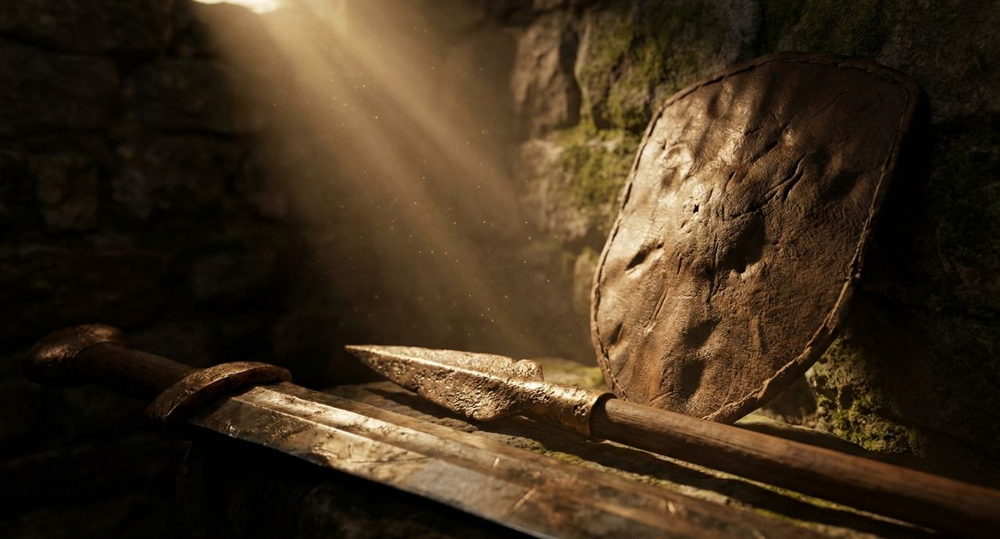
g47_01 돌벽에 기댄 청동 칼과 창과 가죽 방패문맥 배경 태그·장소·분위기
g01_09 바다 파도중립 장식 중립 장식 · 최근 반복
고린도후서 10–13장 / 약한 바울을 누가 인정합니까? / 편지는 힘 있지만 몸은 약하다고 말하는 사람들, 바울은 누구의 판단을 따를까요?
 g10_06 성벽에 내린 광주리
g10_06 성벽에 내린 광주리본문 설명 장면 낱말·장
g11_10 편지를 쓰는 손문맥 배경 문맥 배경 · 낱말 편지 · 최근 반복
긴장 · 너희 중 하나가 / 심령이 괴로워 / 저녁 먹는 자리에서 예수님은 제자들의 발을 씻으십니다(13:4–12). 그 뒤 심령이 괴로워 증언하십니다(13:21). / 너희 중 하나가 나를 팔리라 요 13:21
g23_02 제자의 발을 씻기심본문 설명 장면 낱말·장
g27_04 식탁 위 떡과 토기 잔, 손들문맥 배경 문맥 배경 · 태그 bread,table
데살로니가후서 1–3장 / 주의 날이 이르렀다는 말 앞에서 / 영으로나 말로나 편지로나 들려오는 말, 바울은 무엇으로 가려내는가
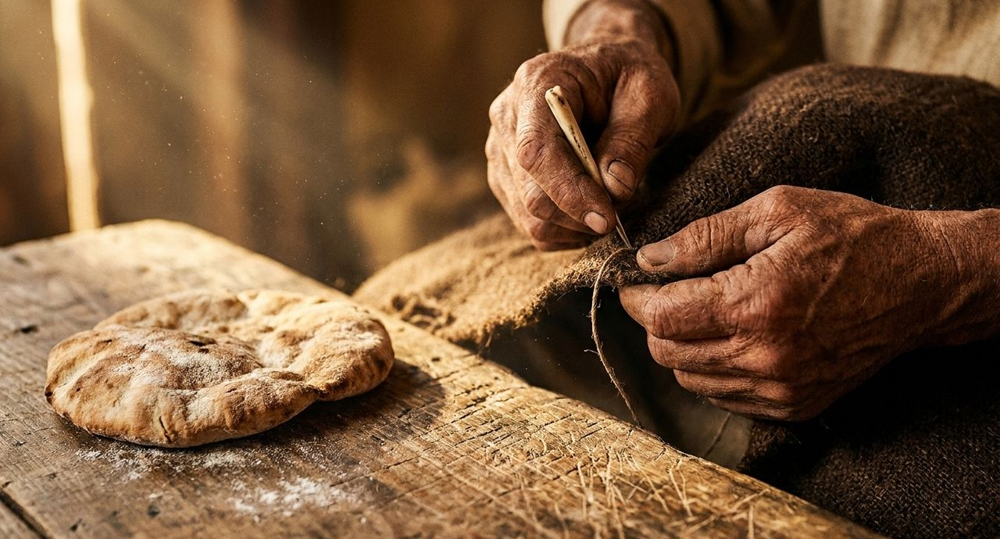
g45_07 천막 천을 깁는 손과 떡 한 덩이(살후 3:8–10)본문 설명 장면 낱말·장
g21_10 글을 쓰는 손(둘째 그림)문맥 배경 문맥 배경 · 낱말 편지 · 태그 scroll · 최근 반복
배경 · 같은 옥의 두 꿈 / 해석할 자가 없도다 / 요셉이 갇힌 감옥에 바로의 두 관원장이 들어옵니다(40:1–4). 두 사람은 같은 밤에 꿈을 꾸지만, 해석해 줄 사람이 없어 근심합니다(40:5–8). 요셉이 그들에게 말합니다. / 해석은 하나님께 있지 아니하니이까 청하건대 내게 이르소서 창 40:8
g13_03 빛이 드는 감옥본문 설명 장면 낱말·장
g04_05 토기 등잔문맥 배경 문맥 배경 · 태그 oil_lamp
긴장 · 적은 누룩 / 자랑하는 것이 옳지 아니하도다 / 바울은 그 사람을 사탄에게 내주었다 하면서도 목적을 붙입니다. "영은 주 예수의 날에 구원을 받게 하려 함이라"(5:5). / 너희가 자랑하는 것이 옳지 아니하도다 적은 누룩이 온 덩어리에 퍼지는 것을 알지 못하느냐 고전 5:6
g43_03 등잔을 들고 집 바닥을 살피는 사람(고전 5:7)본문 설명 장면 낱말·장
g01_09 바다 파도중립 장식 중립 장식 · 최근 반복
긴장 · 쓸 데가 없다 / 지체가 지체에게 하는 말 / 그런데 바울이 든 몸 비유 안에는 한 지체가 다른 지체에게 하는 말이 나옵니다. / 눈이 손더러 내가 너를 쓸 데가 없다 하거나 또한 머리가 발더러 내가 너를 쓸 데가 없다 하지 못하리라 고전 12:21
g43_06 한 상 위에서 맞닿은 여러 손(롬 12; 고전 12)본문 설명 장면 낱말·장
g01_09 바다 파도중립 장식 중립 장식 · 최근 반복
전환 · 싹 난 지팡이 / 레위 집을 위하여 낸 아론의 지팡이에 움이 돋고 순이 나고 꽃이 피어서 살구 열매가 열렸더라 / 이튿날 모세가 증거의 장막에 들어갑니다. 본문은 이렇게 적습니다.
g36_09 싹 나고 살구 열린 지팡이와 마른 지팡이들(민 17)본문 설명 장면 낱말·장
중립 장식 중립 장식 · 태그 flowers
이사야 51–55장 / 산을 넘는 발, 그리고 상한 종 / '네 하나님이 통치하신다'는 소식, 그 소식은 누구의 상함을 지나 오는가
g46_02 첫 햇빛이 능선만 붉게 비춘 유대 광야중립 장식 태그·장소·분위기
 g12_01 빛이 드는 동산과 강
g12_01 빛이 드는 동산과 강본문 설명 본문 설명
출애굽기 21–24장 / 원수의 소를 돌려보내는 법, 원수에게 원수가 되시는 하나님 / 같은 '원수'라는 말이 나오지만 하나님이 주시는 말씀은 어떻게 다를까
 g26_11 종려나무 그늘 아래 오아시스 길
g26_11 종려나무 그늘 아래 오아시스 길중립 장식 태그·장소·분위기
 g14_13 제단과 열두 돌기둥에 뿌리는 피
g14_13 제단과 열두 돌기둥에 뿌리는 피본문 설명 본문 설명